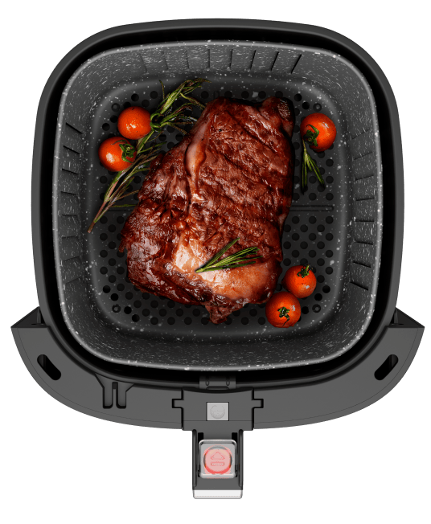
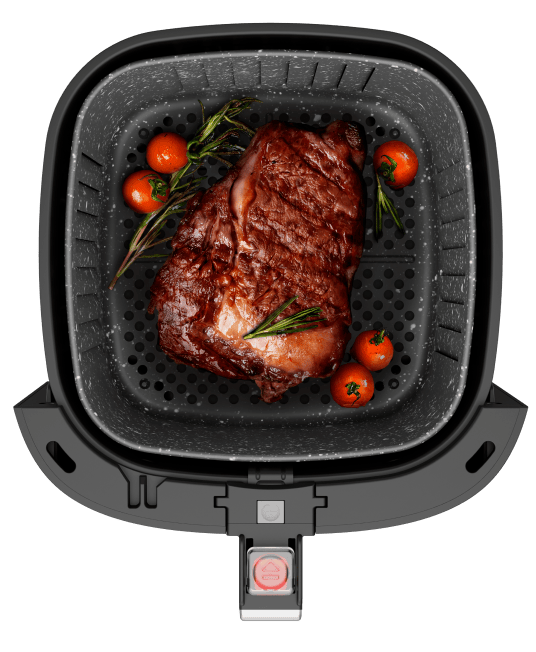

PROSDÓCIMO
Painel
digital
Simplifique sua experiência na cozinha com a praticidade das 13 funções pré-programadas no painel touch screen.
Fritadeira
sem óleo
Descubra o prazer de assar alimentos sem perder o sabor e a crocância, com menos gordura e mais saúde.
CESTO E GRELHA
REMOVÍVEL
Prepare porções em grandes quantidades, sirva com facilidade e tenha limpeza completa sem esforço.
Toque para começar o preparo com estilo
Pronto para uma experiência de controle total das suas receitas? Escolha a temperatura, o tempo e outras configurações com facilidade e precisão. A AirFry Mega Family Digital possui um painel digital touch screen com até 13 funções pré-definidas.
Em poucos toques, você pode ter uma das 10 receitas programadas pronta para saborear com quem ama. Além disso, a fritadeira elétrica WAP conta com funções que vão transformar sua rotina na cozinha.
Descubra receitas saborosas com apenas um toque na WAP AirFry Mega Family Digital
A ferramenta essencial para quem busca uma culinária saudável e cheia de sabor tem nome. Com as fritadeiras elétricas WAP, sua rotina na cozinha fica muito mais fácil!
Além de preparar pratos para a família toda, a Fritadeira Elétrica WAP Mega Family Digital oferece até 13 funções pré-programadas no painel digital. São 10 receitas à disposição, opção de descongelamento e reaquecimento.
E as vantagens não param por aí. A air fryer digital ainda conta com as funções “Manter Aquecido”, “Descongelar” e a função “Virar”, que proporcionam mais praticidade em cada preparo.
 

DE CAPACIDADE

8 PÃES DE QUEIJO
4 MINI HAMBÚRGUERES
4 CUPCAKES
10 COXINHAS DE FRANGO
Sabor inigualável
sem uso de óleo
Descubra um mundo novo e saboroso de receitas que vão conquistar seu paladar. Sem usar óleo ou manteiga, é possível preparar desde carnes suculentas, hambúrgueres e pães de queijo até deliciosas sobremesas doces.
A tecnologia de aquecimento da air fryer digital envolve os alimentos em 360°, aquecendo-os e os cozinhando internamente, permitindo fritá-los apenas com ar quente.
Receitas de chef
exclusivas para você
Desperte seu paladar para uma rotina alimentar mais saudável, e de dar água na boca, com receitas assinadas pelo Chef Henrique Fogaça.
De pratos principais as sobremesas, o chef irá revelar como usar todo o potencial da linha cozinha da WAP em seus pratos.
Função reaquecer
Aqueça os pratos após o fim do cozimento com facilidade, utilizando a opção de reaquecimento da air fryer digital.
Função manter aquecido
Mantém seus pratos sempre na temperatura certa para serem servidos, mesmo após o fim do preparo.
Função descongelar
Descongele alimentos de forma rápida, sem perder o sabor, antes de dar início a próxima etapa do preparo.
Função virar
Garante que os alimentos sejam virados ou mexidos automaticamente, para um processo de cozimento uniforme.
Alça removível
+ Possibilidades
Só com o cesto
Prepare alimentos em
grandes quantidades
Só com a grelha
Muito mais espaço para preparar alimentos grandes
Retire o cesto
do recipiente
Retire o cabo
do cesto
Coloque o cabo
no recipiente

Coloque
a grelha
Gray Stone
Preserva o sabor e facilita a limpeza! Com a tecnologia Gray Stone, os alimentos não grudam, o que torna a limpeza do cesto mais eficiente.
Fácil limpeza
Mais praticidade para sua rotina! Com um simples movimento do engate, pressione o botão para retirar o cesto e realize a higiene interna completa da Air Fryer Mega Family Digital da WAP.
CIRCULAÇÃO DE AR
EM 360°
A tecnologia de circulação de ar em 360° garante um cozimento uniforme dos alimentos, deixando-os crocantes por fora e macios por dentro, além de eliminar o óleo em excesso, proporcionando pratos mais saudáveis.
WAP AIRFRY MEGA
FAMILY 7.1L DIGITAL
Experimente ter praticidade no preparo das refeições e embarque em aventuras descomplicadas pelo mundo da culinária com toda família. Conheça a Fritadeira Elétrica WAP AirFry Mega Family 7,1 Digital, a parceira ideal para uma rotina mais fácil, saudável e repleta de sabor.
TIMER DE ATÉ 12 HORAS
Tenha total controle no processo de cozimento utilizando o timer, acompanhado por um aviso sonoro ao fim do preparo dos alimentos.
TEMPERATURA DE ATÉ 200°C
O seletor de temperatura, com variação de 40°C a 200°C, permite que você escolha a opção ideal para diversos preparos.
SEGURANÇA NA ROTINA
Ao fim do tempo selecionado no timer, a fritadeira desliga automaticamente, emitindo um aviso sonoro.
EXPLORE SUA CRIATIVIDADE
Cozinhe como um chef! Prepare receitas saborosas, do café da manhã ao jantar, com praticidade. Descubra os recursos de alta qualidade em um design moderno e versátil.
WAP AIRFRY MEGA
FAMILY 7.1L DIGITAL
Experimente ter praticidade no preparo das refeições e embarque em aventuras descomplicadas pelo mundo da culinária com toda família. Conheça a Fritadeira Elétrica WAP AirFry Mega Family 7,1 Digital, a parceira ideal para uma rotina mais fácil, saudável e repleta de sabor.